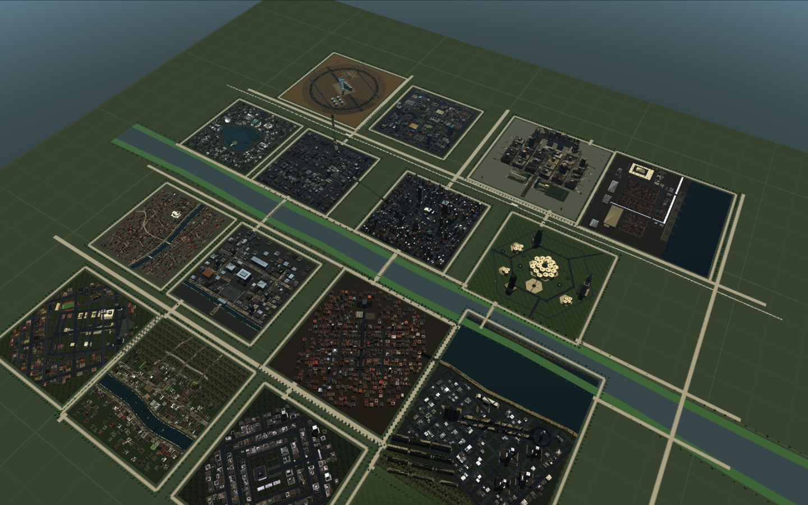

杨城
长江下游的一座城。17 个城区沿澄川河铺开，六家 AI 大厂把总部和机房都放在这里，云湖研究院替全城做模型评测。市民的一天从调度开始，到推荐结束。
一座以 AI 为业、也以 AI 为戒的城。

我不担心市民不会用 AI。
我担心他们太会用。
上任第一年，我做了一次全市摸底。87% 的成年人每天至少调用一次 AI 服务；六成公文初稿由模型起草；三分之二的家庭作业辅导发生在屏幕上。数据很好看。
同一份摸底里还有一栏：当模型给出一个明显不对劲的答案时，会停下来核实的市民，占 11%。
这才是问题。不是不会用，是太会用——熟练到不再怀疑。熟练会把判断力悄悄换成惯性，而惯性是看不见的，它只在出事之后才显形。
所以我联合六家大厂和云湖研究院，在城里盖了六座馆。它们不展出 AI 有多强，只展出 AI 是怎么失效的：能力被误读、解释不成立、指标失真、数据被污染、递归吞掉信息、预算被耗尽。六座馆，六个几乎人人都会遇到、却很少有人当场问出口的问题。
我不指望谁逛完一遍就变成专家。我只希望他下一次按下回车之前，多停半秒。
这座城的产业还要往前跑，AI 还会更深入地嵌进市政、医疗、教育和港口。跑得越快，越需要有人记得刹车在哪。
六座馆，六个必须问出口的问题
这是市长与六家大厂、云湖研究院共建的一组公共设施。每一座只处理一种失效机制，进门先看到的不是展品，是一个问题。
能力与边界博物馆
它表现得很强，究竟证明了什么？
推理法医馆
解释得通，是否意味着解释真的影响了答案？
指标失效博物馆
分数提高，是否真的让任务变好？
数据污染博物馆
它答对，是泛化、记忆，还是证据无法区分？
递归坍塌博物馆
数据反复来自模型自身时，哪些信息会消失？
潜能与预算博物馆
一次失败，是能力不足、调用不当，还是预算不足？
城市不是六座馆，是十七个区
博物馆只是公共设施里的六件。城市的绝大部分是总部、机房、港口、铁路、学园和住区——六家大厂的楼都在其中，只是它们不需要被展出来。点一个区名，进它的街区近景。
最近在城里上线的东西
六家大厂与云湖研究院的新产品，上线后会在这里公示：日期、出品方、开放了什么。点进去能看到它是什么、怎么用，以及现在能不能打开。
这座城还在长
杨城的产业结构不是定稿。新项目先上公告栏；和 AI 失效有关的，会被并进某座馆；同类攒够一批，就再盖一座新的。这座城的目录一直是开着的。